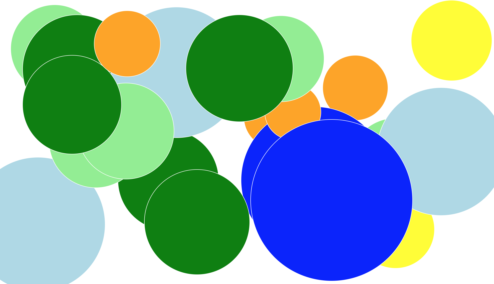

Raam's Comp-Sci Story (3/16/21)So I thought this story would be about something else...Some of the ways I liked to express myself through my work
Through Colors:

Others were more intended for others, but they're still somewhat a reflection of it.